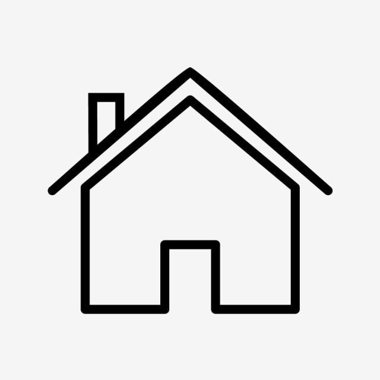

home
National Institute Of Technology, Warangal
Virtual Labs-ECE
LIST OF LABS
EDC-1
EDC-2
DSD LAB 1
DSD 2
ANALOG COMM
DIGITAL COMM
SS LAB
EDC-1
1.Frequency response of transistor
2. Zener Diode Characteristics and Zener Diode as Voltage Regulator
3. V-I Characteristics of pn junction Diodes
4.Half wave rectifiers
5. Full Wave Rectifiers
6. Rectifiers with Filters
EDC-2
1. Single stage BJT amplifier
2. Two stage BJT amplifier
3. FET amplifier
4. Differential amplifier
5. Voltage series feedback amplifier
6. Voltage shunt feedback amplifier
7. Current series feedback amplifier
DSD-1
a) 2-to-4 decoder
b) 8-to-3 encoder
c) 4:1 mux
d) full adder/subtractor
e) 8-bit parity generator/checker
f) 8-bit Kogge-stone adder
g) 16:1 mux realization using 4:1 mux
DSD-2
a) 16:1 mux realization using 4:1 mux
b) 4-bit ripple carry adder using full adder
c) 8-bit adder using 4-bit ripple carry adder
d) 8-bit carry select adder using 4-bit ripple carry adder
e) 16-bit adder by cascading an 8-bit Kogge-stone adder/Ripple carry adder
f) 4-bitasynchronousup/downcounter
g) 8-bitasynchronousup/downcounter
ANALOG COMM
EXPERIMENT-1
EXPERIMENT-2
EXPERIMENT-3
EXPERIMENT-4
EXPERIMENT-5
EXPERIMENT-6
EXPERIMENT-7
DIGITAL COMM
EXPERIMENT-1
EXPERIMENT-2
EXPERIMENT-3
EXPERIMENT-4
EXPERIMENT-5
EXPERIMENT-6
EXPERIMENT-7
SS_LAB
EXPERIMENT-1
EXPERIMENT-2
EXPERIMENT-3
EXPERIMENT-4
EXPERIMENT-5
EXPERIMENT-6
EXPERIMENT-7